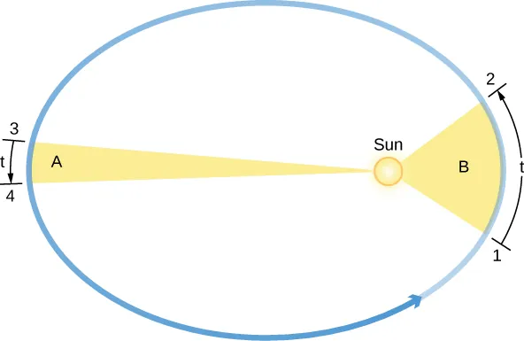

ellipse
ASTR 101 · Lecture 04
Gravity, Orbits, and Tides
Evidence, model, and quantitative reasoning
Learning Goals
- Explain why this lecture's central phenomenon matters: planets do not move randomly: they sweep out repeatable paths that reveal how gravity organizes motion from moons to galaxies.
- Use the key model idea that kepler's laws summarize orbital patterns; Newton's law explains why they occur.
- Apply the lecture's quantitative tool with units, assumptions, and a physical interpretation.
- Correct the misconception: There is gravity in space. Astronauts feel weightless because they are in continuous free fall, not because gravity is absent.
Reading anchor: OpenStax Astronomy 2e, Chapter 3.1-3.4 on Kepler's laws, Newton's laws, orbital motion, and tides.
Why This Question Matters
Tycho Brahe's precise observations made Kepler's laws possible; Newton then showed that the same gravity acting on falling objects also governs the Moon and planets. The formula followed the data.
Opening Phenomenon
Planets do not move randomly: they sweep out repeatable paths that reveal how gravity organizes motion from moons to galaxies.
First question: what is directly observed, and what part is an explanation built from a model?
Vocabulary for Reasoning
semi-major axis
period
eccentricity
center of mass
escape velocity
tide
Use these terms to describe evidence and relationships, not as isolated vocabulary.
Evidence We Need to Explain
- Planet positions repeat with periods related to orbital size.
- Moons, planets, asteroids, and spacecraft all follow the same gravitational principles.
- Tidal effects depend on differences in gravitational pull across an extended body.
Physical or Geometric Model
- Kepler's laws summarize orbital patterns; Newton's law explains why they occur.
- An orbit is free fall with enough sideways motion to continually miss the central body.
- The two-body model is powerful but approximate; real systems include perturbations.
Quantitative Tool
\[ P^2 = a^3 \quad \text{and} \quad F_g = G\frac{m_1m_2}{r^2} \]
Use the solar-system form only with years, AU, and orbits around the Sun; otherwise include the central mass.
Worked Example
- An asteroid with semi-major axis 4 AU has P^2 = 64, so P = 8 years.
- The same proportionality does not apply unchanged around a different central mass.
- A unit check clarifies which version of Kepler's law is being used.
The answer should name the unit system and explain why orbital size changes period so strongly.
Visual Reasoning
Use the orbit geometry to connect path shape, central mass, orbital period, and model assumptions.
- Where is the central mass?
- How does orbital size connect to period?
- Which simplification breaks down in real multi-body systems?

Common Misconception
There is gravity in space. Astronauts feel weightless because they are in continuous free fall, not because gravity is absent.
Correct it by describing orbit as continuous free fall around a central mass.
Active Learning Segment
Students compare two orbits with different semi-major axes and eccentricities and predict period, speed changes, and observational consequences.
Write a prediction first, compare reasoning with a neighbor, then revise your answer in one sentence.
Lab or Observing Connection
The orbital analysis activity uses simple plots of period versus semi-major axis. Your plot should show how orbital size and period reveal a gravitational relationship.
Synthesis
Gravity turns observation into prediction: if the model is right, positions, speeds, and periods are linked quantitatively.
- How do Kepler's laws describe motion?
- How does Newtonian gravity explain it?
- What real-world complications are hidden by the two-body model?
References and Visual Credits
- OpenStax, Astronomy 2e: OpenStax Astronomy 2e, Chapter 3.1-3.4 on Kepler's laws, Newton's laws, orbital motion, and tides.
- Local reference copy:
references/openstax-astronomy-2e.pdf. - Visual: Equal time intervals sweep equal areas, so orbital speed changes along an ellipse. Credit: OpenStax Astronomy 2e, Fig. 3.5, CC BY-NC-SA 4.0.